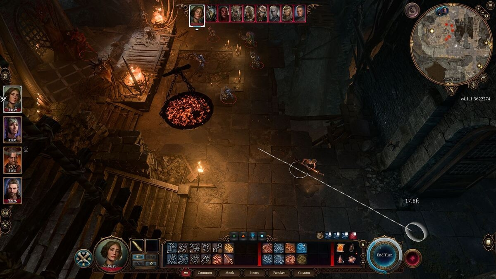
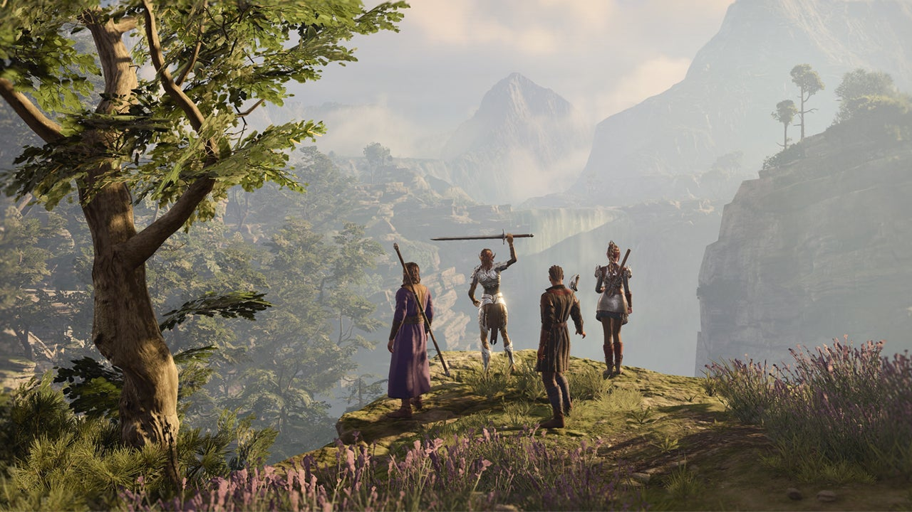

Baldur’s Gate 3 é um jogo que supera todas as expectativas dos fãs de RPG. Inspirado no universo de Dungeons & Dragons, o game oferece uma experiência rica em narrativa, combate, exploração e personalização. Com visuais deslumbrantes, personagens carismáticos e uma trama envolvente, Baldur’s Gate 3 é um jogo para muitas campanhas.
Um mundo vivo e repleto de possibilidades
O jogo se passa no cenário de Forgotten Realms, um dos mais populares de D&D. O jogador assume o papel de um aventureiro que foi infectado por uma larva de um ser alienígena chamado illithid. Essa larva pode transformar o hospedeiro em um monstro, mas também concede poderes especiais. O jogador deve buscar uma cura para sua condição, enquanto enfrenta perigos e tentações em um mundo vasto e detalhado.
Baldur’s Gate 3 é um jogo que permite ao jogador escolher seu próprio caminho. O game conta com um sistema de escolhas e consequências que afeta a história, os personagens e o mundo. O jogador pode interagir com diversos NPCs, cada um com sua personalidade, motivações e segredos. O jogador pode recrutar até três companheiros para sua jornada, cada um com sua própria história e habilidades. O jogador pode também desenvolver relacionamentos com seus aliados, podendo até mesmo se envolver romanticamente com alguns deles.
O jogo também incentiva a exploração e a criatividade. O jogador pode usar suas habilidades, itens e magias para resolver problemas de diferentes maneiras. O jogo não impõe limites à imaginação do jogador, permitindo que ele faça coisas como desafiar um zumbi para uma competição de bebida, incendiar uma floresta inteira ou se transformar em um urso e seduzir outro urso.
Um combate dinâmico e desafiador
Baldur’s Gate 3 utiliza um sistema de combate baseado em turnos, que segue as regras de D&D. O jogador pode controlar seu personagem e seus companheiros em batalhas estratégicas contra diversos inimigos. O jogo conta com um sistema de iniciativa, que determina a ordem das ações dos combatentes. O jogador pode usar ataques físicos, magias, habilidades especiais e itens para derrotar seus adversários.
O jogo também apresenta um sistema de física e ambientação que torna o combate mais realista e imersivo. O jogador pode usar o cenário a seu favor, aproveitando elementos como cobertura, altura, iluminação e objetos interativos. O jogador também deve estar atento aos efeitos ambientais, como fogo, água, eletricidade e veneno, que podem afetar tanto os aliados quanto os inimigos.
O jogo oferece um nível de dificuldade adequado para cada tipo de jogador. O jogador pode escolher entre quatro modos de dificuldade: Fácil, Normal, Difícil e Insano. Cada modo altera aspectos como a vida dos inimigos, o dano causado pelos ataques, a frequência das falhas críticas e a inteligência artificial dos adversários.
Um visual impressionante e uma trilha sonora envolvente
Baldur’s Gate 3 é um jogo que impressiona pela qualidade gráfica e sonora. O jogo utiliza a engine Divinity 4.0, desenvolvida pela Larian Studios, que permite criar cenários belos e detalhados. O jogo conta com uma variedade de ambientes, como florestas, cavernas, cidades, templos e planos extraplanares. Cada ambiente possui sua própria atmosfera, clima e iluminação.
O jogo também possui personagens bem modelados e animados. O jogo permite ao jogador personalizar seu personagem com diversas opções de raça, classe, gênero, aparência e voz. O jogo também apresenta personagens não jogáveis expressivos e realistas, que reagem às ações do jogador com emoções e gestos.
O jogo conta com uma trilha sonora original composta por Borislav Slavov, que já trabalhou em outros jogos da Larian Studios, como Divinity: Original Sin 2. A trilha sonora combina elementos de música orquestral, coral, étnica e eletrônica, criando uma sonoridade única e adequada para cada situação. O jogo também possui um excelente trabalho de dublagem, com vozes de atores profissionais que dão vida e personalidade aos personagens.
Um jogo para muitas campanhas
Baldur’s Gate 3 é um jogo que oferece uma experiência longa e recompensadora. O jogo possui uma campanha principal que pode levar mais de 100 horas para ser concluída, dependendo das escolhas do jogador. O jogo também possui diversas missões secundárias, que podem revelar mais sobre o mundo, os personagens e a história. O jogo também possui um modo cooperativo online e local, que permite ao jogador compartilhar sua aventura com até três amigos.
Baldur’s Gate 3 é um jogo que vale a pena ser jogado várias vezes. O jogo possui um alto grau de rejogabilidade, pois cada partida pode ser diferente da anterior. O jogo permite ao jogador experimentar diferentes combinações de raça, classe, habilidades e equipamentos. O jogo também permite ao jogador explorar diferentes caminhos, alianças, romances e finais.
Baldur’s Gate 3 é um jogo que merece ser chamado de obra-prima do RPG. O jogo é uma homenagem aos clássicos do gênero, mas também uma inovação que eleva o padrão de qualidade. O jogo é uma obra de arte que encanta os olhos, os ouvidos e a mente. O jogo é uma aventura que desafia, emociona e diverte. Baldur’s Gate 3 é um jogo que todo fã de RPG deve jogar.